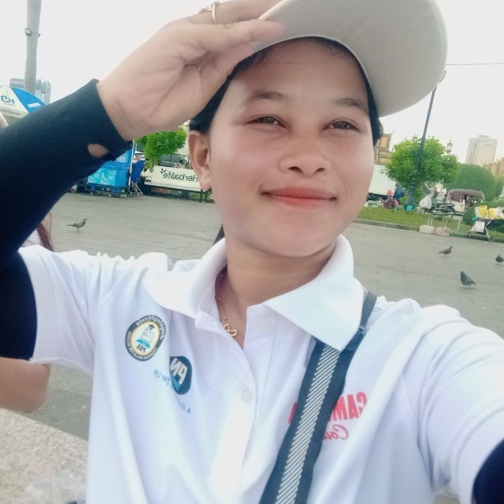

01
01Open to learning & opportunities
Hi, I'm Sokry
Ren.
Web Programming Student
I am a passionate student learning web development and building creative digital projects.
about-sokry.js
01 const developer =
{02 name: 'Sokry
Ren',03 focus: 'web
development',04 learning: ['UI
design',05
'software'],06 status: 'growing
daily'07 };08
return developer;

Available for opportunities
Curious
by nature
by nature
Building
with purpose
with purpose
01 / About me
Making ideas
useful.
 Learning through
Learning throughreal projects
I am Sokry Ren, a Web Programming student at Passerelles Numériques Cambodia. I am interested in web development, software development, UI design, and technology.
I enjoy learning new programming skills and creating useful digital projects. For me, the best work sits at the intersection of thoughtful design, clear code, and a real need worth solving.
Web
developmentBuilding for the browser
UI
designSimple, human interfaces
Problem
solvingCuriosity into solutions
“Technology becomes meaningful when it makes someone's day a little easier.”
02 / Education
A foundation for
what's next.
01
Current education2025 — 2027
Passerelles Numériques Cambodia (PNC)
Web Programming · Class WEP C · Generation 2027
Practical training in front-end development, programming fundamentals, databases, collaboration, and professional readiness.
Web developmentProfessional
skillsProject-based
02
Previous
educationEditable
Your previous school
Add your secondary school, dates, and a short note about what you learned here.
Update this detail03 / Skills
Tools I use to
keep growing.
Every project is a chance to sharpen a skill, ask a better question, and make the next idea clearer.
01
Technical skills
HTMLStructure
CSSVisuals
JavaScriptInteraction
PythonLogic
BootstrapFramework
SQLData
Git & GitHubWorkflow
SASSStyling
02
Soft skills
- Communication↗
- Teamwork↗
- Problem solving↗
- Time management↗
- Creativity↗
- Adaptability↗
04 / Selected projects
Ideas made
visible.
01 02
02 03
03 04
04 05
0505 / Career direction
Building toward
software.
The kind of work I want to grow into, one thoughtful project at a time.
Career goal
Software Developer
Design, build, and improve software that helps people accomplish something meaningful.
Main responsibilities
- Build and maintain web applications
- Translate ideas into clear solutions
- Collaborate with a product team
Growing toward
- Stronger JavaScript and Python
- Reliable, accessible interfaces
- Confident technical communication
06 / Interview experience
Learning from
real stories.
“
Conversations with people in the field help me see the path ahead with more clarity.
IP
Interviewee profileEditable
placeholder · Professional profile
01 Tell us about your background
Use this space to add the interviewee's educational background, working experience, and journey into technology.
02 What skills matter most?
Capture the technical and soft skills that came up in the conversation, plus examples of how they are used at work.
03 What challenges did they face?
Add a meaningful challenge, the approach used to overcome it, and the advice shared for students.
04 Key lessons learned
Record the most useful insight from the interview and one action you want to take next.
07 / Work experience
Practice makes
progress.
Experience is also built in classrooms, teams, community work, and the small responsibilities we choose to own.
01 Editable
Internship placement
Organization name · Date range
Add responsibilities, what you contributed, and the skills gained through this internship.
02 School
School projects
Passerelles Numériques Cambodia · 2025 — present
Building websites and applications while practicing planning, implementation, and iteration.
03 Team
Team projects & volunteering
Organization name · Date range
Add teamwork, volunteer activities, and the practical skills you developed alongside others.
08 / Achievements
Small wins,
real momentum.
Certificates
Add certifications and learning milestones as you earn them.
School achievements
Highlight moments you are proud of from your studies.
Programming projects
Show the work that helped you move from theory to practice.
Presentations
Record opportunities to explain ideas and share your work.
Teamwork
Celebrate the collaboration behind successful outcomes.
Competitions
Leave room for contests, challenges, and future wins.
09 / Contact
Let's start a
conversation.
Whether you have an opportunity, a question, or just want to say hello, my inbox is open.